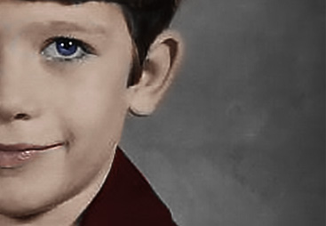
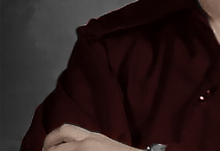
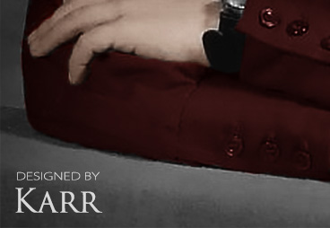
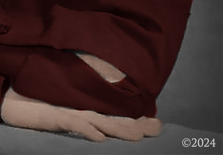
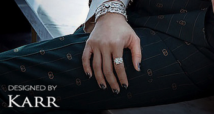
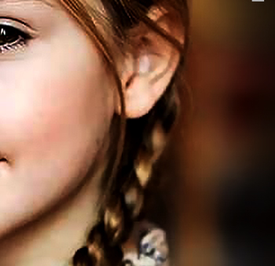
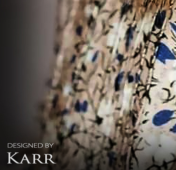
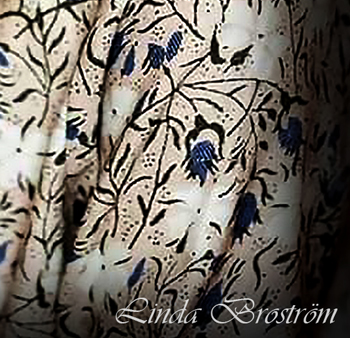

Navigate Pages Below
JonBenet Ramsey
Arrested for Her Murder in 2006


In 2006, I was arrested for the murder, kidnapping, and sex assault of six year old JonBenet Ramsey and extradited from Bangkok to Boulder Colorado. My arrest was based on my account of the night of her death that corroborated with physical evidence withheld from the public by the coroner and law enforcement from 1996 to 2006. (Photo Designed by John Mark Karr) TAP TO VISIT THIS PAGE

Official Statements
Released Since 2016


Statements I have released since 2016 can be found on this page. When I have anything I consider important to say, I release a statement here. When and if I find out there are lies circulating about me in the media or I have something to say in response to other issues in the media related to me, I release those statements here. On rare occasions, I update statements which is indicated and dated. (Photo Designed by John Mark Karr) TAP TO VISIT THIS PAGE
The First Arrest
Six Months Nationwide FBI Investigation


In 2001, I was arrested in Petaluma California. For six months, I languished in semi-solitary confinement while the FBI investigated me for the serial murder of little girls across America. On a rainy November night in 2001, I boarded a plane in San Francisco bound for London. I would remain out of America for five years until my 2006 arrest. My family thought me to be dead. (Photo Designed by John Mark Karr) TAP TO VISIT THIS PAGE
Polly Hannah Klaas
The Disastrous Abduction that Killed Her


In 2019, a contact informed me that they were interviewed by the FBI for seven hours in 2006. They stated the interview was as much about Polly Klaas as JonBenet Ramsey. The FBI played numerous recorded calls from 2001 wherein I discussed Klaas in depth with an informant. The FBI stated that I had discussed details of Klaas with her killer in multiple conversations. I have a message for the FBI and Polly Klaas's killer in this October 2023 article. (Photo Designed by John Mark Karr) TAP TO VISIT THIS PAGE
Rise Up Sweet Children
Bellum!


In 2007, I was investigated by the FBI for planning to organise a sex cult involving teenage girls. A computer containing the alleged plan was seized by the FBI. In 2010, nineteen year old Samantha Spiegel interviewed with mainstream media for two months wherein she said I was the leader of a sex cult. Her account was filled with stories of the sexual abuse of little girls and a death squad that would kill on my command. TAP TO VISIT THIS PAGE
Life After 2006
My Life Would Never be the Same


Returning to 2006, after my release in Sonoma County California, I moved to Atlanta. In the months that followed in the same year, I was investigated by the Department of Homeland Security for international child sex trafficking, international child molestation and international murder of children. I was harassed by a neighborhood civic organization that sent out 2,000 letters to residents warning them of the threat - John Mark Karr. I was treated like a sex offender. I was harassed by hordes of law enforcement who would show up with lights flashing even for the mere sitting on a park bench overlooking a golf course in the middle of the day. My life was a living hell. I would not be able to remain in America for long. (Photo Designed by John Mark Karr) TAP TO VISIT THIS PAGE
John Mark Karr
Seven Years Old




This photo was retrieved in 2006 from the Karr home in Alabama. The photo was scanned. The original print is long gone. This is the only published photo of John Mark Karr as a child. On a blustery afternoon, after a long day in second grade, my grandmother took my brother and me to a small photo studio to have our pictures taken. I had a wonderful childhood, from the age of four and a half, when I arrived from Atlanta to live with my grandparents, in a beautiful countryside setting. (Photo Colorized and Designed by John Mark Karr)
Paetongtarn Shinawatra
Thailand's New Prime Minister

On August 16th 2024, the 18th anniversary of my arrest in Bangkok for the murder of JonBenet Ramsey, Thailand chose a new prime minister. Her name is Paetongtarn Shinawatra. She is the third prime minister from the Shinawatra family. Her father is former Thai Prime Minister, Thaksin Shinawatra. Congratulations, Prime Minister Shinawatra! We Love You, Paetongtarn! May you be Thailand's prime minister for years to come! (Photography Designed by John Mark Karr)
Finally, brothers and sisters, whatsoever is true, whatsoever is noble, whatsoever is right, whatsoever is pure, whatsoever is lovely, whatsoever is admirable - if anything is excellent or praiseworthy, think about such things. (Philippians 4:8)
Princess Estelle
Swedish Royal Court
Photographed in 2020



The exquisite Princess Estelle of Sweden, then 8 years old, sweetly posed for this standing portrait in 2020 for photographer, Linda Broström. Princess Estelle will turn 12 years old in 2024. She is the daughter of Crown Princess Victoria and Prince Daniel of Sweden and the granddaughter of King Carl XVI and Queen Silvia of Sweden. (Linda Broström / Kungahuset / Photo Designed by John Mark Karr)


Copyright 2024 All Rights Reserved